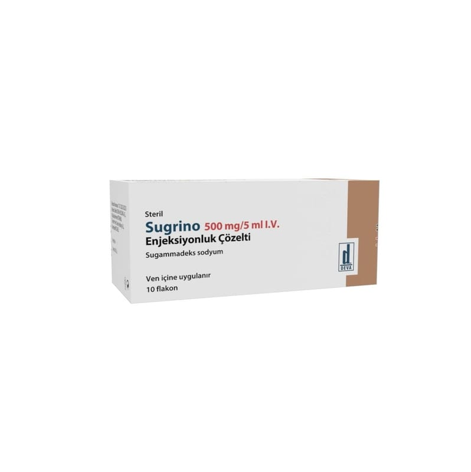

Sugrino 500 mg/5 ml I.V. Enjeksiyonluk Çözelti, 10 Adet

Ne için kullanılır
KT · Bölüm 1SUGRİNO etkin madde olarak sugammadeks içerir. SUGRİNO seçici kas gevşeticileri bağlayıcı madde olarak adlandırılır; çünkü sadece spesifik kas gevşeticileriyle (roküronyum bromür ve veküronyum bromür) birlikte etki gösterir. SUGRİNO, kauçuk tıpa ile kapatılmış ve flip-off kapak ile sızdırmazlığı sağlanmış, gözle görülebilen yabancı madde içermeyen, homojen, berrak, renksizden hafif sarıya dönen çözelti içeren şeffaf 6 CC’lik 10 adet cam flakonlarda sunulmaktadır ve kutular içerisinde ambalajlanmaktadır. SUGRİNO, ameliyattan sonra kaslarınızın yeniden işlevlerini yerine getirmesi için kullanılır.
Bazı türdeki ameliyatları olacağınız zaman, kaslarınızın tamamen gevşemesi gerekir. Kaslarınızın gevşemesi ameliyatın yapılması için doktorunuza kolaylık sağlar. Bu amaçla, tüm vücutta uyuşmayı sağlayan ilaçlar kullanılarak kaslarınız gevşetilir. Bunlara kas gevşeticiler denir ve örneğin roküronyum bromür ve veküronyum bromür bu türden ilaçlardır. Bu ilaçlar ayrıca nefes alıp verirken kullandığınız kaslarınızı da gevşettiği için, yeniden kendi kendinize nefes alıp verene kadar ameliyat sırasında ve ameliyattan sonra nefes almak için yardıma ihtiyacınız olur (yapay havalandırma).
SUGRİNO tekrar kendi başınıza solunum yapabilmenize imkan vermek için ameliyattan sonra kaslarınızın iyileşmesini hızlandırmak için kullanılır. SUGRİNO bunu vücudunuzdaki roküronyum bromür ya da veküronyum bromür ile birleşerek yapar. SUGRİNO yetişkinlerde roküronyum bromür ya da veküronyum bromürün kullanıldığı her durumda ve çocuklarda ve ergenlerde (2-17 yaş arası) roküronyum bromür orta düzeyde gevşeme amaçlı kullanıldığında uygulanabilir.